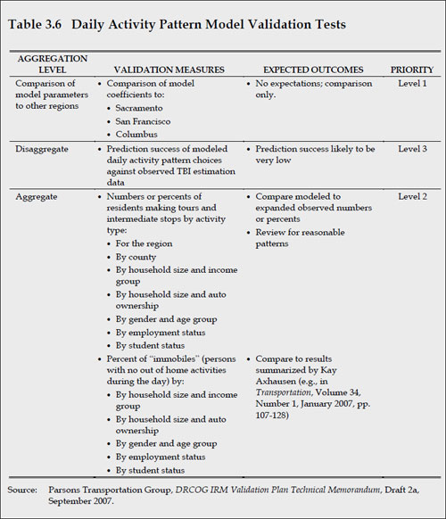

Model Validation and Reasonableness Checking/Validation Plan
# Validation Plan Specification
You've got to be very careful if you don't know where you are going, because you might not get there. (5)
Most travel model development and update programs follow carefully planned approaches. For example, initial decisions are made regarding likely model forms; the availability and quality of existing model estimation data are evaluated; decisions are made regarding the need to collect additional data for model development; a model development plan is established (possibly as a request for proposals from consultants); and model estimation and calibration are initiated. The specification of such plans enhances the likelihood of a successful model development process and provides a basis for budgeting for the model development process.
Likewise, the development of a model validation plan will enhance the likelihood of a successful validation process. A successful validation process will, in turn, lead to greater acceptance of travel forecasts and, hopefully, improved decision-making regarding the expenditure of scarce public funds on transportation projects.
# Timing of Validation Plan Specification
Model validation plans are best specified at the outset of a model development process when important decisions are made regarding:
- The availability of validation data and the need to collect additional data;
- The level of validation required based on likely uses of the model;
- Proper goals for the accuracy and sensitivity of the model and model components considering the proposed uses for model results;
- Tradeoffs regarding the allocation of funds for model development and model validation; and
- The proper allocation of funds for validation data collection, validation efforts, and sensitivity testing.
Even if a model validation plan is not specified at the outset of the model development process, it is useful to specify a plan prior to the initiation of model validation in order to establish guidelines for the accuracy and sensitivity of the model and model components that are consistent with the proposed use of model results.
# Recommended Validation Plan Components
A model validation plan should include the following components:
- Identification of validation tests,
- Identification of validation data, and
- Identification of validation costs
Each of these validation plan components will be covered in additional detail below. In addition, subsequent chapters of this manual discuss various validation tests that can be considered in the validation plan.
# Identification of Validation Tests
# Validation Context
Model validation must be driven by the intended use of the models, including the types of analysis being supported by the model, the scopes of the analyses, and the business processes being supported by the model. Validation tests and standards might be different for each intended use. Thus, a single travel model might be subject to multiple validation efforts.
Types of analysis may be as divergent as policy analysis and project planning. The model validation required for planning a highway expansion will differ from model validation for policy analysis. Two basic modeling needs, highway system planning and New Starts applications, require model results to satisfy more rigorous standards regarding their ability to match traffic counts or boarding counts. In this context, the focus of model validation must be whether the model is representing reality. Proper model sensitivities are important for both project planning and policy testing. However, the need to reproduce observed roadway and transit volumes might be less crucial for models used for policy testing if the reduced accuracy results in increased, but reasonable, model sensitivities.
Policy questions may appear suddenly and often lead to questions regarding model sensitivity. Often the model is expected to respond adequately to policy questions that were not considered when the model was developed. In such cases, model validations demonstrating appropriate sensitivities in response to different scenarios are important. For example, the sudden increase in fuel prices in the summer of 2008 led to validation concerns regarding the use of fuel prices in models as well as the sensitivity of models to changes in fuel price.
Scopes of analysis may include such uses as regional planning, systemwide planning, corridor planning, interchange justification reports, or site impact analyses. Systemwide planning- and project-level planning require different validation methods. For systemwide planning, validation should combine model sensitivity testing with testing based on matching absolute aggregate numbers, such as independent estimates of VMT. For project-level planning, a focus on matching more detailed absolute numbers might be most appropriate. For example, matching time-of-day traffic volumes and traffic speeds might be important validation measures for project-level planning.
The planning horizon is also an important scope of analysis consideration. Typically, project-level analyses are assigned short-term planning horizons while the systemwide analyses have long-term planning horizons. For the short term, criteria based on more detailed absolute numbers, such as time-of-day traffic volumes, become more important in validation efforts, since more detailed project decisions may be made based on the forecasts. Long-term planning usually focuses on more general goals and objectives regarding regions and the development of programs and allocation of resources to achieve those goals and objectives. Thus, validation should focus on model sensitivity to factors impacting travel decisions and traveler behavior.
Temporal validations such as forecasting or backcasting are important for systemwide model validations, particularly if sufficient time or transportation system changes exist between the years selected for the validation. While sensitivity testing is most often considered for long-term planning, it is also an appropriate validation test for short-term planning.
A full range of types of "absolute numbers" may be considered as validation of travel models moves from long-term regional planning to short-term project-level planning. For the long-term regional planning context, the absolute numbers considered include regional VMT, regional transit boardings, regional mode shares, and major screenline crossings or district-to-district flows. Model validations for short-term corridor planning, interchange justification reports, and site impact analyses focus on reproducing link specific traffic counts or detailed transit line boardings.
Business processes may include the planning efforts required to support an MPO, a regional transit district, or an air quality control district. The business process relates to the charge of the agency using the travel forecasts. A primary objective for model validation is an improved tool to support decision-making. This requires that decision-makers and other users are satisfied that the model structure and results address their needs. Considering the business process provides a practical context to model validation.
# Types of Validation Checks
There are three basic types of validation checks to consider in a model validation plan: disaggregate checks, aggregate checks, and sensitivity/reasonableness checks. While each may be used to support the various validation contexts discussed above, some might be more appropriate in certain contexts.
Disaggregate checks are characterized by the use of disaggregate data. These checks include the determination of elasticities for various model coefficients and the comparison of modeled to observed travel choices for individual trips, travelers, or households. Disaggregate checks may not be appropriate for all model components. For example, it is not feasible to perform disaggregate checks of traffic assignment for a static equilibrium assignment process. However, if geographic positioning system (GPS) units are used for travel survey data collection, it might be possible to validate a traffic simulation procedure.
Ideally, validation should be performed using data other than those used for model estimation. As a result, disaggregate checks may be more difficult and costly to perform than other types of checks. For instance, for an ideal validation, a travel survey dataset used for model development must be sufficiently large to divide into model estimation and validation datasets or two travel survey efforts might be required to collect model estimation data and model validation data.
The collection of two survey datasets might be a feasible approach over time. For example, the Puget Sound Regional Council (PSRC) travel model was estimated in 2000 based on 1999 household survey data. The PSRC collected a new household travel survey (more than 4,000 households) in 2006, providing them the option of performing a disaggregate model validation of the year 2000 travel model using 2006 travel survey data.
Disaggregate checks focus on the reproduction of traveler behavior, and are therefore more appropriate for validation contexts that test model sensitivities.
Aggregate checks are characterized by the use of aggregate data. These checks are the most frequently used since aggregate validation data are most commonly available. Aggregate checks can include comparing how closely the travel model reproduces traffic counts and transit boardings, regional VMT, mode shares, and district-to-district trip flows. Aggregate checks are more focused on the reproduction of travel patterns and are therefore more appropriate for validation contexts that require good traffic and transit forecasts.
Sensitivity/reasonableness checks are typically focused on the response of models to changes in transportation supply or policy. Sensitivity checks may be considered validation checks if they are based on forecasting or backcasting of travel, especially if there has been a major change in transportation supply or policy. For example, the Denver Regional Council of Governments (DRCOG) travel model was estimated and calibrated using 1997 travel survey data and validated against 2005 traffic counts and transit boarding data. A major extension of the Southwest light-rail transit (LRT) line was performed between 1997 and 2005, providing the opportunity to test the sensitivity of the model in a "real world" setting. In rare cases, such as with the 1999 and 2006 PSRC data, disaggregate sensitivity checks that are true validation checks may be performed.
Reasonableness checks focus on the rationality of travel model response to transportation supply or policy changes. Reasonableness checks may be aggregate or disaggregate, but are not true validation checks since they are not compared to observed travel data.
Risk analysis is the evaluation of impacts that may result from inaccurate forecasts. Risk analysis is not a model validation practice but, rather, a travel model forecast consideration associated with specific alternatives being evaluated. Risk in travel forecasts for projects is introduced by many sources, only one of which is the travel model. Nevertheless, model validation may contribute information for risk analyses by providing "confidence intervals" for the model based on the different types of validation checks defined above. The specification of the model validation plan might include the collection of validation data and identification of validation checks designed to provide useful information for future risk analyses.
# Specifying Validation Expectations
A model validation plan should include a listing of the model components to be validated, the validation tests to be performed, the aggregation level for those tests, and the expected outcomes. If required, standards may also be set. As examples, an excerpt from the DRCOG Integrated Regional Model Validation Plan pertaining to one model component (the daily activity pattern model) is shown in Figure 2.1 below, and an excerpt from the FSUTMS-Cube Framework Phase II, Model Calibration and Validation Standards: Model Validation Guidelines and Standards is shown in Figure 2.2 below.


# Identification of Validation Data
A model validation plan should include a listing and assessment of the data available for validation. Appropriate validation tests can then be defined based on the assessment of the available data. The listing and assessment also provide direction for the collection of addition validation data. An example of an assessment performed by the Sacramento Area Council of Governments (SACOG) is provided in Figure 2.3 below.

# Assessing Currently Available Validation Data
How well the validation data represent reality is a primary validation question. This question can be illustrated by a review of the veracity of commonly used validation data, traffic counts. Counts are often collected from multiple sources using multiple counting techniques. They may be stored as raw counts or factored counts, such as average annual daily traffic (AADT). Developing a validation dataset of average weekday traffic (AWDT) may be difficult due to the different sources, different counting methods (one-day, two-day, permanent traffic recorder), and reporting methods (raw axle counts, raw counts divided by average axle factors, AADT estimated from raw counts).
Even when traffic counts are collected and stored in a consistent manner, there can be substantial variation in day-to-day counts. Figure 2.4 summarizes data collected in 1994 from 21 continuous count stations in Florida. The number of count days at the sites ranged from 210 to 353. The counts were used to estimate the average annual daily traffic (AADT) for each site along with the standard deviations around those means. Figure 2.4 below shows an "error bar" representing ±1.96 standard deviations as a percent of the AADT for each of the count sites. While it is not precisely correct in terms of statistics, roughly 95 percent of the daily counts should be expected to be within ±1.96 standard deviations of the AADT.
While the standard deviations shown in Figure 2.4 should have been less if only weekday traffic had been considered, the analysis underscores the issue of variability associated with all observed data collected using sampling procedures. Unfortunately, it is not always obvious how data have been collected or how much sampling error is inherent in the data.
Similar issues and concerns can be raised with many other types of data used for model validation purposes. Thus, as shown in Figure 2.3, an assessment of the data quality as well as the data availability should be performed for the development of any model validation plan.
# Prioritizing Validation Data Collection Needs
The assessment of validation data coupled with the development of the checks to be included in the model validation plan can guide the setting of priorities for validation data collection. Specifically, if validation test priorities are established in the validation plan (see Figure 2.1), the data required for the highest-priority tests can be reviewed for availability and quality. Decisions can then be made regarding which data collection efforts will be most cost effective for improving overall model validation.
 Source: Wright, Tommy, et al., Variability in Traffic Monitoring Data, Final Summary Report, prepared for Oak Ridge National Laboratory, August 1997, Table 5, Page 10.
Source: Wright, Tommy, et al., Variability in Traffic Monitoring Data, Final Summary Report, prepared for Oak Ridge National Laboratory, August 1997, Table 5, Page 10.
Proper collection of validation data is as crucial as proper data collection for model estimation and calibration. Improper validation data can lead to poor decisions regarding the veracity of the travel models whereas well thought out and properly designed data collection efforts can enhance overall model validation. For example, a transit on-board survey collection effort might be necessary for model validation in preparation for a New Starts application. In addition to the development of estimates of linked transit trips for mode choice model validation, the data may be used to validate transit path-building procedures and district-to-district transit flows if the data collection effort is properly designed and conducted. In this example, it might be possible to validate the two additional model components (transit path-building and transit trip distribution) for relatively little additional cost with the result being a better overall model validation.
# Validation Budgeting
In the May 9, 2008 Peer Exchange on Travel Model Validation Practices, participants were asked for their recommendations on allocation of resources for data collection and model estimation, calibration, validation, and documentation. The results are summarized in Table 2.1. Some care should be used in interpreting the recommendations shown in the table. Peer exchange panelists based their recommendations on the definitions of model estimation, calibration, and validation shown in the Introduction, which may vary somewhat from definitions used in specific regions. Quite often, model calibration is mixed with model estimation or with model validation. The information summarized in Table 2.1 suggests that these three efforts (estimation, calibration, and validation) should comprise approximately 50 percent of a model development budget and that budget allocations for each of the three should be approximately equal.
As shown in Table 2.1, almost 40 percent of an overall budget for model development is recommended for data collection. The data collection effort should include data for both model estimation and model validation. The overall allocation between those two broad needs will vary by region depending on assessments of local needs and priorities, currently available model estimation and calibration data, and currently available validation data.
Table 2.1 Informal Survey of May 7, 2008 Travel Model Validation Practices Peer Exchange Participants Regarding Allocation of Modeling Resources
| Activity | Desired Resource Allocation (Percent) |
|---|---|
| Data collection | 39 |
| Estimation | 16 |
| Calibration | 17 |
| Validation | 17 |
| Documentation | 9 |
Note: Percents do not sum to 100 due to rounding.